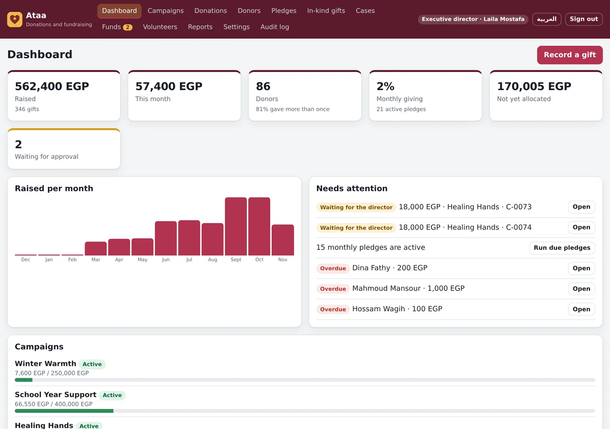
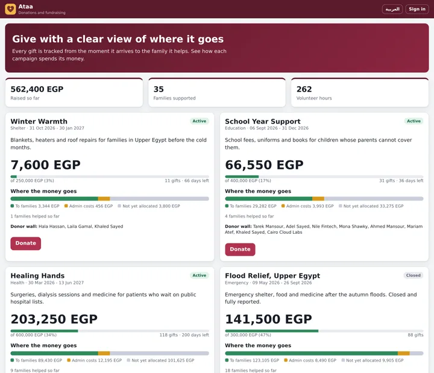
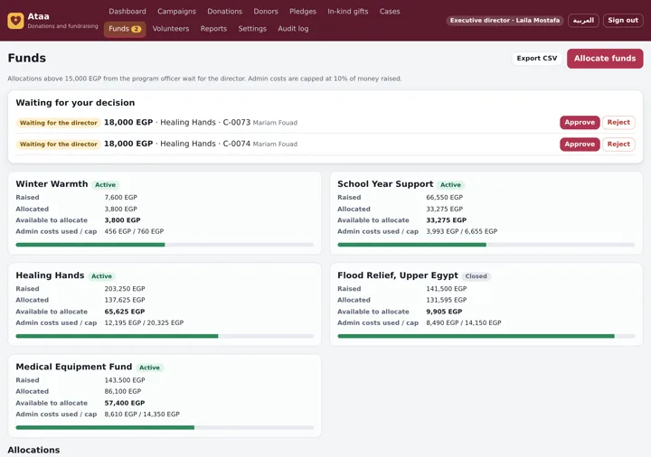
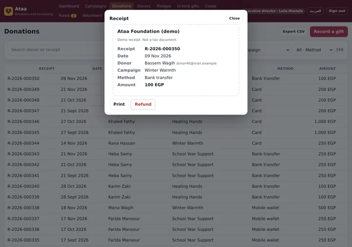
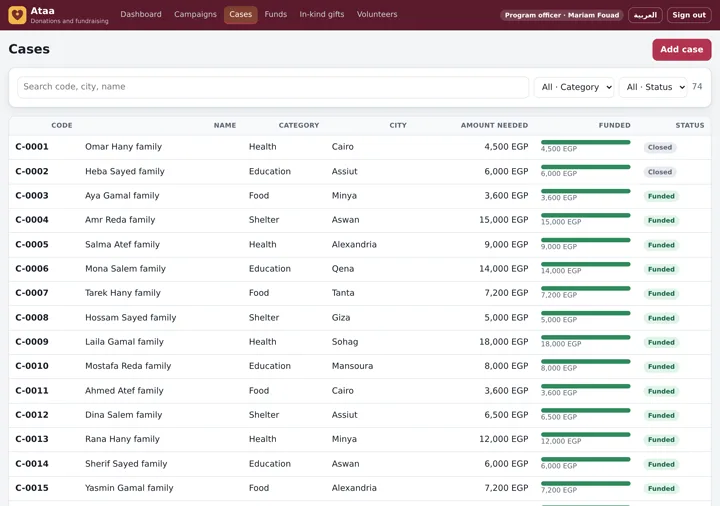
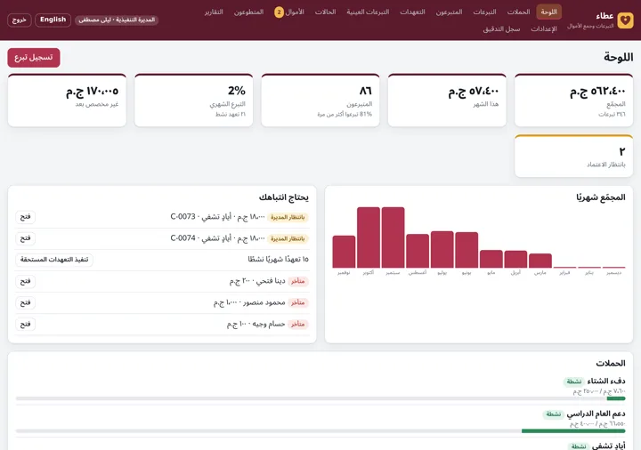
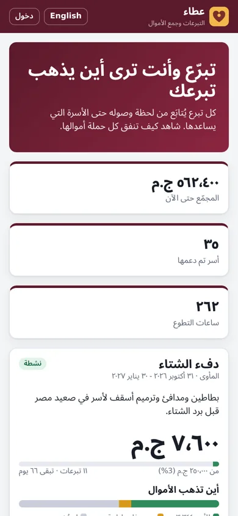

PORTFOLIO DEMO / BUILT / LIVE DEMO
Ataa
From the first gift to the family it helps, in plain view.

ACTUAL BUILDAtaa · Director dashboard. Fictional foundation, donors and families.
The problem
A small charity tracks gifts in a spreadsheet and a chat group. Receipts are typed by hand, monthly pledges are chased from memory, nobody can say how much of a campaign has reached a family and how much went to running costs, and the person who records the money is the same person who spends it.
What was built
A fundraising platform with four roles and a public page. Staff run campaigns with a goal, dates and a cause, record gifts that get a numbered receipt, and keep donors with their history. Pledges are one-off or monthly; running the due pledges creates each month's gift once. In-kind gifts such as food or blankets are logged separately from cash and handed to a matching case. Beneficiary cases carry a need amount and a code; the program officer allocates campaign money to a case, and an allocation above the limit waits for the director while it reserves the money. Admin costs are capped as a share of what was raised. Volunteers sign up for shifts and log hours that the program officer approves toward a certificate. Reports show money by month, by payment method, top donors, repeat donors and where each campaign's money went. The public page needs no sign-in: each campaign shows its progress, a split between families, admin costs and not yet allocated, a donor wall for people who agreed, and a demo donation form. The interface works in Arabic (right to left) and English, and on a phone.
What changes for the charity
Before. One person records and spends. Admin costs are discovered at the end of the year. Families' names and phone numbers are visible to everyone who sees the sheet. A refund or a double entry is found by luck.
After. The server refuses to spend money that is not there or to send health funds to a food case. Large allocations need the director. The fundraising officer sees cases by code only, and the program officer never sees donors. The public page shows the same numbers the director sees.
Why it matters to a donor
Donors give again to charities that show where the money went. The demo is built around that moment. These are designed situations, not measured results from a real organisation.
The approach
No framework and no build step: plain JavaScript pages, one serverless API function and one logic file that holds every rule (campaign states, receipts, refunds, pledges, allocation limits, admin cap, in-kind matching, volunteer hours, privacy per role, reports). The same file runs in the API, the browser and the test suites. Permissions are enforced on the server on every operation, and the audit log records each money action with its actor.
The result
A live demo anyone can open. Sign in as the executive director (PIN 1111), fundraising officer (2222), program officer (3333) or volunteer (4444); the PINs are on the sign-in screen, and the public giving page is open without signing in. The sample foundation has 6 campaigns, 88 donors, about 350 gifts, 22 pledges, 74 cases, 8 in-kind items, 12 volunteers and two allocations waiting for approval. Verification: 42 unit tests and more than 260 browser and API checks run against the live site, covering forged tokens, malformed and oversized bodies, every role's permissions, what each role must not see, refunds, allocation approval and the reserved money, pledges that never pay a month twice, in-kind matching, volunteer hour rules, the public gift limits, hostile text shown as plain text, spreadsheet-formula escaping in the CSV, Arabic RTL and phone layouts.
Evidence & production limits
One shared demo foundation: everyone sees and changes the same data. State is kept in server memory only, so it resets about every six hours and whenever the server instance restarts. Sign-in is a PIN printed on the sign-in screen, so it must not hold real donor or family data. The foundation, donors, families, phones and emails are fictional.
Known gaps: no payments (the public form records a demo gift and no money moves), no database, no real authentication, no email, SMS or WhatsApp receipts, receipts are not tax documents, no file upload, and in-kind values are estimates typed by staff. Some server error messages stay in English on the Arabic screens. Direction, scope and delivery: Nada Gamal.
Next chapter
A payment gateway with real receipts, a database, donor accounts, email and WhatsApp thank-you messages, Gift Aid style tax statements where they apply, and file upload for case documents would be the next implementation steps.
Inside the build
Open any preview to see the full capture. Captures show demonstration content, not evidence of client use.





